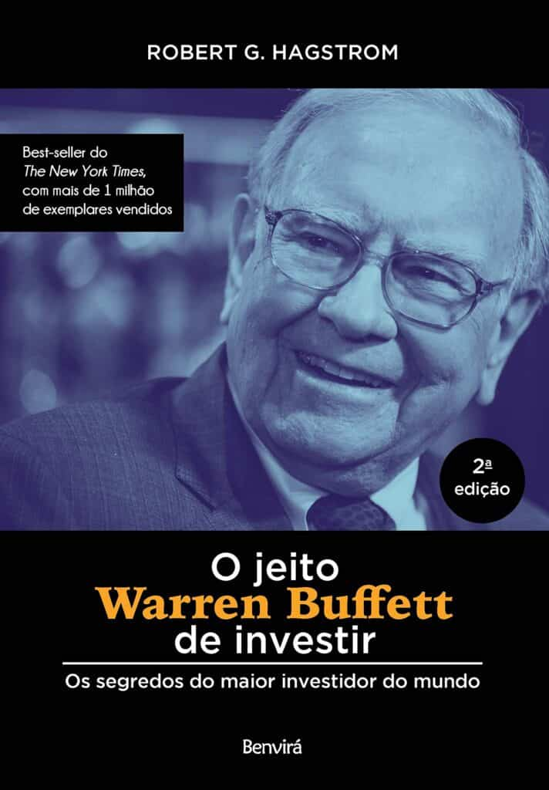
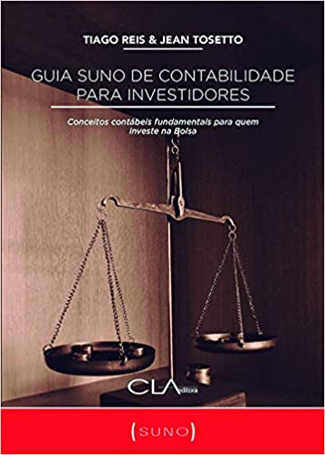
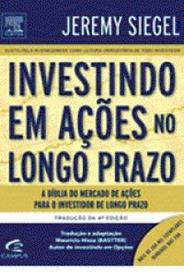

Recomendações
Livros
O livro “Pai Rico, Pai Pobre” traz lições que são valiosas para todos. Em especial, para aqueles que desejam empreender e ser uma pessoa bem sucedida. A obra já é bastante conhecida e até virou best seller. Ela é, inclusive, considerada por muitos como um dos livros mais interessantes para aprender a lidar com dinheiro e cuidar do próprio negócio.
T. Harv Eker é um escritor americano milionário, que conseguiu ficar rico em apenas dois anos e meio. Ele escreveu o livro “O segredo da mente milionária”, que é um dos mais circulados no Brasil e objeto do nosso estudo de hoje. Com ele, o autor vendeu mais de 850 mil exemplares e vem ajudando diversas pessoas a se reerguer e pensar de forma clara e objetiva, assim como um milionário

Em O Jeito Warren Buffett de Investir, o autor nos ensina como funciona todo o processo de análise de Warren Buffett. Além disso, poderemos aprender como este precifica as ações. Sem dúvida, é um dos melhores livros sobre investimentos para entender a dinâmica da estratégia do maior investidor de todos os tempos.
Considerado por muitos como A Bíblia dos Investimentos no Brasil, Faça Fortuna com Ações se tornou um clássico pelo seu conteúdo prático. Nesta obra, Décio Bazin nos apresenta os participantes do mercado e como estes agem na Bolsa de Valores. Além disso, o autor nos mostra como traçar o caminho de sucesso nos investimentos.
Este livro sobre investimentos trata de um assunto que todo investidor que aplica em renda variável precisa entender: contabilidade. Com uma abordagem clara, Tiago Reis escreveu uma ótima introdução sobre o tema sem abrir mão da utilidade prática do conteúdo.
Com toda certeza, Investindo em Ações no Longo Prazo é leitura obrigatória para todos aqueles que investem para o longo prazo. Neste clássico, o autor mostra que as ações performaram melhor que qualquer outro ativo nos últimos 200 anos da bolsa americana. Não só isso, mas ele também apresenta os fatores que contribuíram para essa performance.